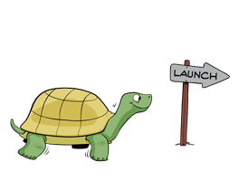

Mission
Learn about CanJS’s mission, why it matters, and how we’ve worked (and will keep working) to accomplish it.
CanJS’s mission is to minimize the cost of building and maintaining JavaScript applications by balancing innovation and stability, helping developers transcend a changing technology landscape.
You shouldn’t have to rewrite your application to keep pace with technology. We constantly integrate new ideas and evolving best practices into CanJS libraries, but in a responsible way that makes it possible to upgrade gracefully. We aim to provide a stable and innovative platform, so you can block out noise and stay focused your app, not the tools.

Keep reading to learn why our mission is important and how we’ve fared in realizing it:
- Stability and innovation matter — Why stability and innovation are the two most important factors in minimizing the cost of building and maintaining JavaScript applications.
- Stability is difficult in the JavaScript community — Why the JavaScript community sees a never-ending stream of frameworks and suffers from JavaScript Framework Fatigue.
- Our history of stability and innovation — How we’ve managed to keep innovating for 10 years (while still providing a viable upgrade path) and what we’re doing now to make CanJS even more stable moving forward.
Stability and innovation matter
Stability and innovation are often conflicting goals, but they are both critical factors to application success. Application development lifecycles can last years, so it’s important that code written today will be relevant tomorrow. Yet technology changes quickly, especially in JavaScript. New technology brings better techniques and is critical for developer happiness and retention.
When starting a new application, it’s easy to forget that the majority of development happens after the application is released. Many frameworks, after a short period of popularity, either:
- End up getting replaced by a hot new framework.
- Release a major version that not even remotely backwards-compatible with the previous version.
Productivity-wise, over the life of your application, that ends up looking like this:

Or like this:

What is needed is a balance of innovation and stability, where developer productivity increases over time, but doesn’t take large steps backward. That looks something like this:

This is our mission.
Stability is difficult in the JavaScript community
You may be familiar with the never-ending stream of hot new JavaScript frameworks that take our community by storm every one or two years.
SproutCore -> Knockout -> Backbone -> Angular -> React -> ?
This isn’t surprising. Consider how many different programming languages you can use on the server-side: Java, Ruby, Python, C#, Haskell, etc. There is only one JavaScript. Innovation is going to move at a blistering pace. We should embrace it.
But, the blistering pace of innovation also means that most frameworks will emerge with one revolutionary feature and then fade as the next revolutionary framework emerges. Instead of the old framework adopting new ideas, the community and its attention move onto the next hot framework.
This makes it difficult to avoid stagnation in any community-driven tool over a long period of time.
Our history of stability and innovation
CanJS has been helping developers transcend the constantly changing technology landscape for over 10 years. Read on to learn about:
- Our history of stability.
- Our history of innovation.
- How 3.0 improves stability and innovation.
Our history of stability
CanJS has been around since 2007. CanJS was originally called JavaScriptMVC. In 2012, JavaScriptMVC was split up into several pieces, including CanJS. Every year, we have improved CanJS by incorporating new best practices and ideas from the larger JavaScript community, while not leaving behind our existing users. The result has been a viable upgrade path for over 10 years!

Major releases are not fully backwards-compatible, but it was possible to transition with limited effort.
Let’s see how one piece of CanJS, can-control, evolved over this time.
In 2007, using JavaScriptMVC 1.0, to listen to when any element
that matches the selector .todos li.complete is clicked, you might have written something like the following:
new MVC.Controller('todos',{
"li.complete click": function(el, ev){
// DO STUFF
}
});
JavaScriptMVC was one of the first libraries to support event delegation, but these old controls weren’t extensible and couldn’t work in an isolated context.
In 2009, jQuery began to dominate JavaScript development. We helped add event delegation to jQuery and integrated it into JavaScriptMVC 2.0. The previous code became:
$.Controller.extend("TodosController",{
"li.complete click": function(el, ev){
// DO STUFF
}
});
$(".todos").todos_controller();
In 2012, using CanJS 1.0, this became:
TodosController = can.Control.extend({
"li.complete click": function(el, ev){
// DO STUFF
}
});
new TodosController(".todos");
In 2013, we released CanJS 2.0, and transitioned to
can-components instead of can-controls. But even now, almost 10 years later,
to make that MVC.Controller work in CanJS 3.0,
you could update it to the following:
import Control from 'can-control';
let TodosController = Control.extend({
"li.complete click": function(el, ev){
// DO STUFF
}
});
new TodosController(document.querySelector(".todos"));
This is one of many examples of CanJS’s code undergoing significant improvements and changes, while still keeping it possible to upgrade your application.
For teams upgrading to 3.0, we created multiple migration paths
so upgrading can be done incrementally.
Our history of innovation
Over the past 9 years of CanJS, the web has evolved, and the best practices in JavaScript application development have changed. As these changes have occurred, CanJS has filtered out the very best ideas and practices, and implemented them in evolving APIs.
To name a few:
- Event delegation became a best practice for managing events around 2009. CanJS added support for event delegation in 2008, before jQuery landed support. Later, when jQuery became ubiquitous, we integrated jQuery into CanJS.
- RESTful APIs eventually became the best practice for designing a backend interface. can-model in 2010 provided ActiveRecord style abstractions around this pattern.
- Data bindings hit the mainstream in 2013 when Angular rose in popularity. CanJS landed support for this feature in 2011 with [can-ejs].
- Building UI widgets as HTML custom elements, similar to web components, has become a best practice. can-component landed in 2013 to support this architecture.
- In 2015, CanJS landed support for using a Virtual DOM and simple server-side rendering with can-vdom.
- In early 2016, CanJS added real-time support and advanced caching technology with can-connect.
- In late 2016, CanJS added a more powerful observable type and enabled it to use functional reactive programming techniques.
This timeline shows more examples:
How 3.0 improves stability and innovation
CanJS 3.0 has been reorganized into several different dozen independent repositories, each with its own npm package and version number using Semantic Versioning. Organizing CanJS into individual repositories will improve CanJS’s stability and innovation going forward.
Stability
Independent repositories improve stability because they make it easier to upgrade more frequently. For example, compare upgrading a 2.3 app to upgrading a 3.0 app.
Despite making relatively few breaking changes, and providing a migration guide, upgrading from CanJS 2.3 to 3.0 looks like a big step:

But if you break that step down, CanJS 2.3 is mostly CanJS 3.0 with a bunch of bug fixes, a heap of new features, and a few breaking changes. Most of the difficulties upgrading are the breaking changes, which account for the majority of the upgrade step size:

Currently, to get all of those bug fixes and new features, you have to take on those breaking changes all at once. Depending on your company culture, and scale of your application, this might not be easy.
Going forward in CanJS 3.0, packages are released independently of
each other. You can upgrade to bug fixes and new features
immediately and delay breaking changes (example: can-route 4.0.0) until later. You can upgrade breaking changes in steps too. For example,
you might upgrade to can-route 4.0.0 one month and can-component 4.0.0
the following month. CanJS 3.0’s upgrade path might look like:

Independent repositories also mean that legacy libraries (like [can-ejs]) can continue living through community-driven fixes and releases. Legacy libraries don’t die simply because they’re no longer included in the core CanJS build.
Innovation
Independent repositories enable CanJS to innovate faster for several reasons:
- Supporting legacy libraries, like [can-ejs], will not slow down the development of other libraries.
- Experiments like can-stream-kefir, where a lot of innovation happens, can be released and have breaking changes without having to “get in” breaking changes in the core and infrastructure libraries.
- CanJS doesn’t feel as monolithic, appealing to developers using just one part. More users means more contributors.
The shift to independent repositories was CanJS 3.0’s biggest undertaking and arguably biggest feature. This fact underscores how important our goal of balancing innovation and stability is to us. For more nuts-and-bolts features of CanJS, please read CanJS’s Technical Highlights.